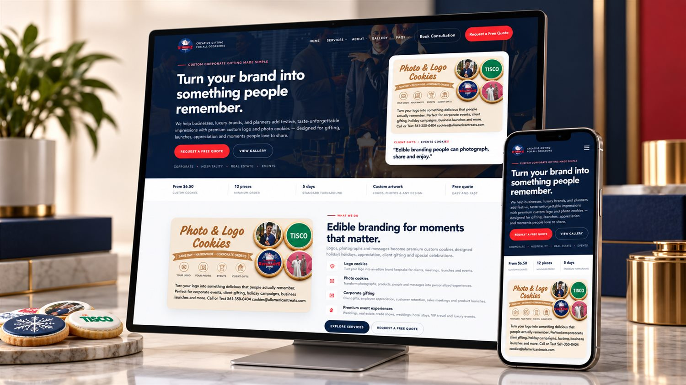
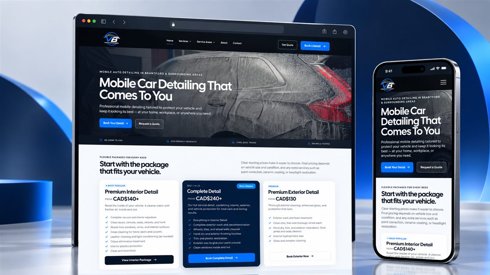
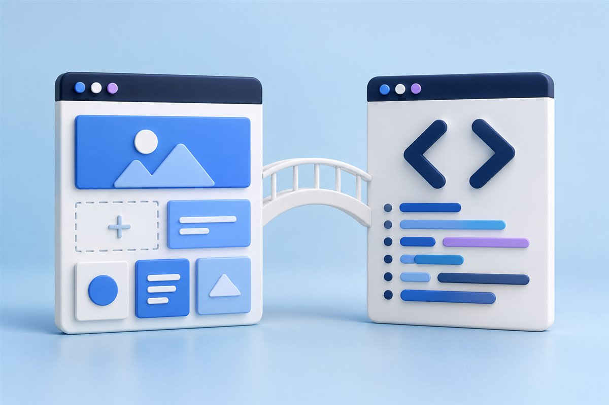
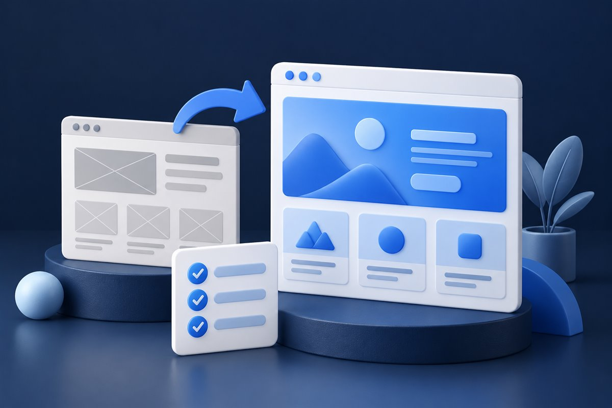

Leadership & professional speaking
Rennie Curran
A WordPress platform that brings speaking, coaching, books and media into one clear experience.
Read the case studyRemote collaboration · Hyderabad, Pakistan
Hello, I’m Wajih Shaikh.
Senior WordPress Developer & Web Designer
I bring the design eye and the development skills to your next website. WordPress builds, thoughtful redesigns and custom functionality for businesses and agencies worldwide.

A little design instinct.
A lot of attention to detail.
Built with tools
I know inside out.
Selected work
Leadership & professional speaking
A WordPress platform that brings speaking, coaching, books and media into one clear experience.
Read the case study
Automotive services
A service website with clear information and a visible path to requesting help.
View project details
Physiotherapy & recovery
A clinic website that makes treatments easier to explore across desktop and mobile.
View project detailsWhat are you working on?
A new build, a better storefront, or a website that finally feels like your business.
Custom themes, structured content and functionality built around the way your business works. A practical backend is part of the job.
Explore this serviceFrom the portfolio · Rennie CurranFigma-to-WordPress and Elementor Pro builds with consistent layouts, thoughtful mobile behavior and an editor your team can manage.
Explore this serviceFrom the portfolio · AP Cupping ClinicStorefronts, product layouts and custom store functionality. I consider the shopping experience alongside how you manage products.
Explore this service
From the portfolio · All American ChefA practical review of images, scripts, plugins, templates and delivery. Performance work starts with evidence and ends with checks.
Explore this serviceFrom the portfolio · Crystal Auto GlassA considered redesign of the content, navigation and interface, with a plan for existing URLs, useful assets and working functionality.
Explore this service
From the portfolio · VB DetailingA developer who sees the whole website
I’m Wajih, a Senior WordPress Developer & Web Designer based in Hyderabad, Pakistan. My work spans interface design, frontend development and the WordPress backend.
I work remotely with businesses and agencies serving the US, UK, Canada, Spain and other international markets. I care about clear communication, manageable systems and a careful handover.
More about meWhat working together looks like
We start with the business goal, current website and practical constraints.
A clear scope, page structure and responsibilities before development starts.
Regular progress updates, responsive checks and functional testing.
Launch support and an editing setup that makes sense for your team.
Behind the build
I choose the stack around the work: how it looks, what it needs to do and who will maintain it.
Custom themes, content architecture and a backend that stays manageable.
Explore development 02 / InterfaceDesign precision with practical visual editing for the people using the site.
Explore Elementor 03 / CommerceProduct experiences and store functionality shaped around the business.
Explore commerceThe client side of the story
Design, communication and the details in between. In my clients’ own words.
Work with me onI needed a top-tier WordPress developer for a corporate site with a tricky custom tracking portal, and Wajih completely nailed it. He built a fully responsive WordPress website using Elementor Pro with a premium UI/UX design.
Read the full review about Corporate website & custom portal
What shocked me was the speed optimization. He configured caching and optimized Core Web Vitals, so the site loads in under 1.5 seconds. He also ensured the WordPress architecture was fully SEO-friendly. The handover was seamless: clean WordPress admin setup, organized plugins, and a guide for the Elementor page builder. No messy code, just a perfectly structured WordPress backend. If you need custom WordPress development or a complete WordPress website design, Wajih delivers pixel-perfect results. 10/10!
Honestly, this went much smoother than I expected. Wajih took our outdated clinic site and completely rebuilt it in Elementor, making it a highly professional WordPress website.
Read the full review about Clinic website redesign
The responsive design is flawless on mobile, and he did a great job with the speed optimization and image compression so it loads fast. From the first message, he understood what we needed, kept me updated, and there were no surprises. If you need a reliable WordPress developer for web design or site optimization, the value here is excellent. Highly recommended.
Honestly, I’m really happy I chose Wajih for our home cleaning website. From the first draft, I could tell he understood the look and feel I wanted.
Read the full review about Home cleaning website
He was easy to communicate with, listened to my feedback, and handled every change without making things complicated. The website looks clean, professional, and works really well on mobile too. The final result turned out even better than I imagined. The whole process was smooth from start to finish, and I really appreciate the effort he put into the project. Thank you, Wajih! I’m genuinely very happy with the website. Highly recommend him to anyone looking for a professional WordPress website. I’d definitely work with him again!
Wajih did an amazing job redesigning our Turn Company service page. He completely transformed the page and made it look much more professional, modern, and polished.
Read the full review about Service page redesign
The layout, spacing, typography, content structure, and mobile responsiveness were all excellent. He understood exactly what I was looking for and went above and beyond my expectations. Communication was great, and he was very professional throughout the project. I’m extremely happy with the final result and would definitely work with Wajih again on future website projects. Highly recommended!
Absolutely exceeded my expectations! Wajih did an amazing job redesigning the Home and About pages for my Crystal Auto Glass website.
Read the full review about Crystal Auto Glass redesign
He has a deep understanding of design, UX, and what makes a business website look professional and trustworthy. The communication was excellent, the delivery was on time, and he understood my vision even when I didn’t have every detail clearly explained. He also provided a great final result and made sure everything was properly implemented on the live website. I’m extremely happy with the quality of the work and would definitely recommend Wajih to anyone looking for a talented, professional, and reliable website designer. I’ll definitely be working with him again in the future.
This was my third project with Wajih, and he once again exceeded my expectations. I am genuinely very happy with the final result.
Read the full review about WordPress clinic & migration
He created a professional, modern, and high-quality WordPress website for my pain clinic, and the whole process was smooth from start to finish. Wajih has a deep understanding of the requirements, excellent attention to detail, strong technical expertise, and always communicates proactively. He even handled the migration and made sure everything was working perfectly. If you are looking for a reliable and talented WordPress developer who truly cares about the quality of his work, I highly recommend Wajih. I will definitely be working with him again!
Excellent experience working with Wajih! He is highly professional, skilled, and very easy to communicate with.
Read the full review about Website improvements
He understood my requirements perfectly and delivered exactly what I needed with great attention to detail. The website updates, animations, and overall improvements were done smoothly and professionally. He was responsive, cooperative, and made sure everything was optimized across all devices. I really appreciate his dedication, quick delivery, and quality of work. Highly recommended, and I will definitely work with Wajih again for future projects!
Really happy with the final landing page! He understood my skincare brand and requirements very well, and the communication was clear and easy throughout.
Read the full review about Skincare product landing page
The design looks clean and professional, with great attention to the Vitamin C Serum, product presentation, and mobile responsiveness.
Wajih exceeded my expectations in every way. He built a beautiful WordPress landing page that matched my vision perfectly, and I didn’t need to request a single change.
Read the full review about WordPress landing page
His attention to detail, communication, and professionalism made the whole process easy, and he even handled the live installation flawlessly. I highly recommend him and will definitely be working with him again.
I had a really great experience working with Wajih on my HVAC website. His communication was excellent from start to finish and he always responded quickly and clearly, which made the whole process very easy.
Read the full review about HVAC business website
He understood my requirements very well and showed strong skills in web design and development. The website came out very professional, modern, and fully optimized for mobile and speed. I really appreciate his attention to detail and how smoothly he handled all the changes I requested. He was very patient, cooperative, and made sure everything was done properly before delivery. Overall, I am very happy with his service, professionalism, and technical skills. I would definitely recommend him to anyone looking for a reliable and skilled website developer, and I will work with him again in the future.
This is my third project with Wajih, and once again he delivered excellent results. My website was very slow on both mobile and desktop, and he completely transformed its performance in less than 16 hours.
Read the full review about WordPress performance
Communication was smooth, delivery was fast, and the results exceeded my expectations. Wajih is highly skilled, reliable, and a pleasure to work with. I highly recommend him to anyone looking for WordPress optimization or development services, and I will definitely work with him again.
Outstanding experience working with Wajih! He is a highly professional WordPress website designer and developer who delivered a modern, responsive, and SEO-friendly website that exceeded my expectations.
Read the full review about WordPress website design
His expertise in custom web design, attention to detail, communication, and problem-solving made the entire process smooth and stress-free. He was patient with revisions, delivered on time, and ensured every aspect of the website was polished and functional. If you’re looking for a reliable Fiverr expert for WordPress website development and professional web design services, Wajih is absolutely the right choice. Highly recommended!
Wajih was exceptional from start to finish. He delivered a professional, high-quality website, communicated proactively throughout the project, and paid close attention to every detail.
Read the full review about Website development
What stood out most was his deep understanding of the requirements and his willingness to go above and beyond to ensure everything was done correctly. Every revision was handled quickly and professionally, and the final result exceeded my expectations. This is my second time working with him, and once again he delivered excellent results. If you’re looking for a reliable WordPress developer who combines technical expertise, professionalism, and outstanding communication, I highly recommend Wajih. I would gladly work with him again.
Outstanding results! This is my second time hiring Wajih, and he nailed it yet again.
Read the full review about WordPress landing page
As a repeat buyer, I can confidently say he is an elite WordPress developer. I gave him a rough idea of what I wanted, and he turned it into a gorgeous, high-end WordPress landing page. His responsive web development is absolute perfection, so the site functions flawlessly on both mobile and desktop. Wajih is a fast, reliable WordPress expert and a skilled web developer who actually listens to feedback and makes adjustments without any hassle. I will definitely keep coming back to him for all my future website projects. Thanks again, Wajih!
Working with Wajih was a great experience from start to finish. He was professional, communicative, and very cooperative throughout the entire project.
Read the full review about Pest control landing page
I hired him to create a landing page for my pest control business, and he delivered a clean, modern, and high-converting design that exceeded my expectations. He paid strong attention to detail, implemented feedback quickly, and made every revision smoothly without hesitation. The overall quality of the website feels very premium and professionally structured. He also provided the migration package and setup files properly, making the final deployment process simple and stress-free.
Really great experience working with Wajih. He delivered the project before the deadline - honestly impressive.
Read the full review about Landing page & handover
Everything was done quickly and smoothly, with no issues at all. The landing page looks clean, modern, and exactly what I wanted. Communication was super fast too. He replied almost instantly whenever I had a question and kept everything easy to understand. What I liked most is that he was very helpful and cooperative throughout the entire process. Even after delivery, he guided me through small details whenever needed. Overall, I’m very satisfied. Great quality, fast delivery, and smooth communication from start to finish. Highly recommend!
Scroll through the feedback. Open a card to read the full review.
Client feedback from Fiverr. Performance and delivery statements reflect individual projects, not a guarantee for future work. View the current Fiverr profile ↗
From the workbench
A practical order of operations for finding WordPress speed problems without blindly adding optimization plugins.
Read the article
A practical comparison for choosing Elementor, a custom theme or a hybrid WordPress approach.
Read the article
What to preserve, measure and map before changing a WordPress website that already has content or search visibility.
Read the articleBefore we start
The scope comes first. Here’s how I approach the questions clients usually need to settle.
I work on WordPress business websites, Elementor layouts, WooCommerce stores, custom themes and functionality. I also help with redesigns, performance improvements and API integrations. Explore the services.
Yes. I review the current theme, content, plugins and requirements before recommending what to keep, improve or rebuild. Read about website redesign.
Cost depends on the design, number of page types, content migration, integrations and custom functionality. Send your current URL and requirements so I can discuss a suitable scope and quote. I don’t use a fixed price that ignores the work involved.
Yes. I am based in Hyderabad, Pakistan and collaborate remotely with teams in Karachi, Islamabad, the United States, United Kingdom, Canada, Spain and other international markets. See the service areas and remote working process.
Let’s talk about your website
Share your website, your goal and the work you have in mind.
Start a project